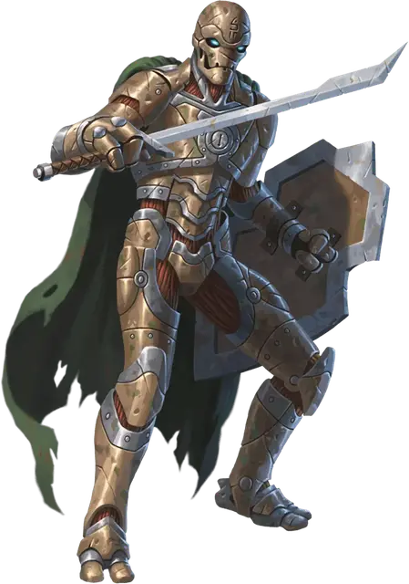

Кованый
Warforged

«Пирс был создан на основе дизайна, а ты был создан по случайности», — проговорил Лакаштай. «Душа — вот что важно, а не форма сосуда». «Почему ты считаешь, что у него есть душа?» — спросил Геррион. «А почему ты считаешь, что она есть у тебя?»
— Кит Бэйкер, «Разрушенные земли»
Кованые были созданы для сражения в Последней Войне. Первые кованые были лишь бездушными автоматонами, но Дом Каннит отдал огромные ресурсы, чтобы улучшить этих стальных солдат.
Неожиданный прорыв в производстве породил полностью разумных солдат, в которых смешались органические и неорганические материалы. Кованые могут быть сделаны как из дерева, так и из металла, однако они также могут чувствовать боль и эмоции. Созданные в качестве оружия, они должны теперь найти свою цель, когда война окончена. Кованые могут стать верными союзниками, хладнокровными убийцами или провидцами для тех, кто ищет смысл жизни.
Живая сталь и камень
Кованые были созданы из смеси органических и неорганических материалов. Шнуры, похожие на корни деревьев, усиленные алхимическими жидкостями, служат в качестве мышц, которые содержатся внутри каркаса из стали, камня или дерева. Бронированные пластины служат в качестве внешней защиты и укрепляют суставы.
Все кованые следуют одному дизайну лиц: шарнирная челюсть и кристаллические глаза, встроенные под надбровными дугами. В самом центре лба располагается метка, уникальная для каждого кованого. Все, что не входит в эти общие элементы дизайна кованых, может быть изменено в зависимости от того, чего хотел добиться его создатель. Помимо этих общих элементов дизайна кованых, конкретные материалы и конструкция кованого варьируются в зависимости от цели, для которой он был создан.
Несмотря на то, что они были созданы, кованые - это гуманоиды. Отдых, исцеляющая магия и проверки Медицины дают такие же эффекты для кованых, что и для обычных гуманоидов.
Личностные качества кованых
Кованые были созданы для того, чтобы служить и сражаться. На протяжении большей части своего существования кованые имели четко определенную функцию и их побуждали сосредоточиться исключительно на этой роли.
Тронхолдский Договор даровал им свободу, однако многие кованые испытали трудности в поисках своего места в мире без войны, а также не понимали, как нужно относиться к тем, кто их создал. Типичный кованый проявляет немного эмоций. Многие из них выполняют какую-то конкретную цель: защита союзников, выполнение контрактных обязательств или исследование земель. Они целиком и полностью посвящают себя этой задаче, как когда-то они посвятили себя войне. Однако среди них есть и те, кто решили исследовать свои ощущения, свою свободу и свои отношения с другими.
Многие кованые не имеют никакого интереса к религии, однако некоторые могут посвятить себя вере или мистицизму, пытаясь найти для себя великую цель или достичь более глубокого понимания. Типичный кованый обладает бесполым телом. Некоторые кованые игнорируют саму суть пола полностью, в то время как другие формируют гендерную идентичность.
Чем больше кованый развивает свою индивидуальность, тем больше вероятность того, что он изменит свое тело, обратившись к мастеру, который изменит его лицо, конечности и обшивку.
Причуды кованых
| к8 | Причуда |
| 1 | Вы вслух анализируете потенциальную угрозу, исходящую от каждого встреченного вами существа |
| 2 | Вы часто неправильно воспринимаете эмоциональные знаки. |
| 3 | Вы яростно защищаете своих друзей. |
| 4 | Вы пытаетесь применить дисциплину времен войны к любой ситуации. |
| 5 | Вы не умеете фильтровать свои чувства и склонны к драматическим эмоциональным вспышкам. |
| 6 | Вы не понимаете одежду помимо ее полезности и полагаете, что она определяет функции человека. |
| 7 | Вы одержимы своей внешностью и постоянно полируете и шлифуете себя. |
| 8 | Война — единственное, что имеет для вас смысл, и вы всегда ищете драки. |
Имена кованых
Кованым присвоены численные номера во время войны. Многие из них получили клички от своих товарищей. Когда они стали свободными, кованые выбрали себе имена, которые могли бы отразить их новый путь. Малая часть кованых взяла себе человеческие имена в честь павшего товарища или наставника.
Имена кованых: Бастион, Булава, Вмятина, Дерево, Железо, Знамя, Камень, Клинок, Копьё, Красный, Кристалл, Кузнец, Лук, Меч, Молот, Палаш, Пика, Пятый, Резак, Ржавый, Синий, Скаут, Стена, Счастливчик, Храм, Хранилище, Хруст, Церковь, Штаны, Якорь.
Особенности кованых
Ваш персонаж кованый обладает следующими особенностями.
Увеличение характеристик. Ваше значение Телосложения увеличивается на 2, а значение любой другой характеристики по вашему выбору на 1.
Возраст. Обычные кованые обладают возрастом от 2 до 30 лет. Максимальный возраст кованого остается загадкой. На данный момент ни один кованый не показал хоть какие-то признаки старения. Также они невосприимчивы к эффектам магического состаривания.
Мировоззрение. Любое.
Размер. Большинство кованых достигают роста от 5 до 6,5 футов (от 1,5 до 2 метров). Ваш размер — Средний.
Скорость. Ваша базовая скорость ходьбы составляет 30 футов.
Стойкость кованых. Вы были созданы для того, чтобы обладать невероятной прочностью, что дало вам следующие преимущества:
- Вы совершаете с преимуществом спасброски от отравления, а также вы получаете сопротивление урону ядом.
- У вас есть иммунитет к болезням.
- Вам не нужно есть, пить и дышать.
- Вам не нужно спать, и вас нельзя магически усыпить.
Отдых стража. Когда вы устраиваете продолжительный отдых, вы должны оставаться как минимум 6 часов без движения и активности, вместо сна. В таком состоянии вы становитесь неподвижны, но остаетесь в сознании и можете всё видеть и слышать.
Встроенная защита. В ваше тело встроены защитные слои, которые можно усилить доспехом:
- Вы получаете бонус +1 к КД.
- Вы можете надеть только те доспехи, владение которыми у вас есть. Чтобы надеть доспех (кроме щита), вы должны встроить его в свое тело. Для этого вы должны быть в контакте с доспехом в течение 1 часа. Чтобы снять доспех, вы должны потратить 1 час на их извлечение. Вы можете отдыхать во время встраивания или извлечения доспеха.
- Пока вы живы, встроенные в вас доспехи не могут быть изъяты из вашего тела против вашей воли.
Специальная сборка. Вы получаете владения одним из навыков по вашему выбору и одним инструментом по вашему выбору.
Языки. Вы можете говорить, писать и читать на Общем, а также на одном дополнительном языке по вашему выбору.
Homebrew
Живой конструкт
Источник: Chronicles of Eberron
Чтобы отразить двойственную природу кованых, вы можете добавить к своему персонажу-кованому следующие особенности:
Вид существа. Вы Конструкт.
Живой конструкт. Живая древесина и алхимические жидкости в вашем теле позволяют вам получать преимущества от заклинаний, сохраняющих жизнь, но обычно не влияющих на Конструктов: лечение ран [cure wounds], лечащее слово [healing word], множественное лечение ран [mass cure wounds], множественное лечащее слово [mass healing word] и уход за умирающим [spare the dying].